1.11
Flaksefugl
Nå skal vi lage vår egen versjon av spillet Flappy Bird. Du styrer fuglen Flakse ved å trykke på mellomromtasten for å flakse med vingene. Du må holde Flakse flyvende og prøve å styre mellom rørene!

Vi begynner enkelt, ved å introdusere Flakse og få ham til å falle.
Desert er et bra valg.Parrot er et bra forslag.Flakse.Gi Flakse dette skriptet:
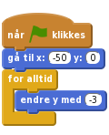
Klikk det grønne flagget.
Nå vil vi at Flakse skal fly oppover når du trykker mellomromtasten.
Drakter og gi de to draktene navnene Vinger opp og Vinger ned.Gå tilbake til Skript og legg til dette skriptet:
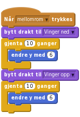
Klikk det grønne flagget.
Vi vil at Flakse skal reagere hver gang vi trykker mellomrom. Men når vi trykker mellomrom så starter to løkker etter hverandre. Hvis vi trykker mellomrom før disse to løkkene er ferdig så skjer det ikke noe. For å løse dette problemet skal vi bruke en variabel til å telle hvor mange flaks vi trenger å gjøre.
flaks. Velg at den bare skal gjelde For denne figuren. Klikk OK. Skjul variabelen ved å ta vekk avhukingen foran variabelen.når mellomrom trykkes. Dra i bytt drakt til Vinger ned-klossen slik at den og klossene under løsner. Legg disse klossene til siden. Vi skal bruke dem igjen straks.Lag et nytt skript. Legg merke til at klossene du nettopp la til siden kan brukes igjen inne i gjenta til flaks = 0-løkken:
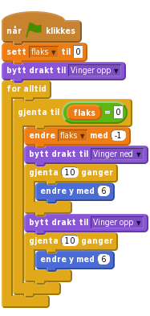
Til slutt, legg følgende skript på når mellomrom trykkes-klossen som ble til overs tidligere:
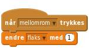
Du skal nå ha tre forskjellige skript på Flakse.
Klikk det grønne flagget.
Vi vil legge til noen hindringer som Flakse kan fly igjennom.
 .
.Punktgrafikk nede til høyre, klikk på Bytt til vektorgrafikk-knappen.Zoom - så du kan se hele tegneområdet.Rektangel, velg en farge og klikk på Fylt rektangel knappen nederst til venstre.Klikk og dra to bokser, en fra toppen og en fra bunnen i midten av tegneflaten. Det skal se omtrent sånn ut:

Fyll farge og klikke på en av skyggemetodene i firkantene nede til venstre. Velg to varianter av samme farge: en for forgrunnen og en for bakgrunnen. Når du klikker på en firkant med fylleverktøyet får du en fin effekt.Gi den nye figuren navnet Rør.
Nå skal vi få rørene til å flytte seg og gjøre høyden tilfeldig slik at vi får en hinderløype til Flakse.
Rør-figuren og velg Skript.Legg til disse to skriptene:
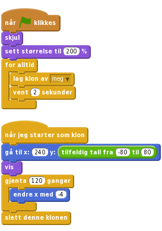
Klikk det grønne flagget.
For at spillet skal bli vanskelig må spilleren styre Flakse gjennom åpningene mellom rørene uten å komme borti hverken rør eller kanten av skjermen. Vi skal legge til noen klosser som merker om Flakse kræsjer.
Flakse-figuren og så på Lyder.Velg lyd fra biblioteket.Flakse. Screech er en kul lyd.Skript-fanen.Legg til dette skriptet på Flakse:
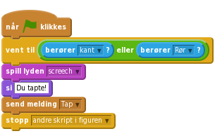
Klikk så på Rør-figuren og legg til dette skriptet:
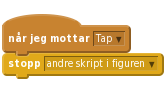
Klikk det grønne flagget.
Spilleren skal score ett poeng hver gang Flakse flyr gjennom en røråpning.
Rør-figuren og legg til en lyd. Bird er et lurt valg.Skript-fanen.For alle figurer. Kall den poeng.Legg så til dette skriptet på Rør:
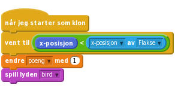
Klikk det grønne flagget.
Supert, du har laget ferdig din egen enkle versjon av Flappy Bird-spillet.
Her er noen flere ting du kan prøve:
Når noe faller på grunn av tyngdekraft øker farten jo lenger fallet varer. Vi skal prøve å etterligne denne måten å falle på.
Flakse som heter løft. Variablen skal gjelde for For denne figuren.Endre Flakses falleskript:
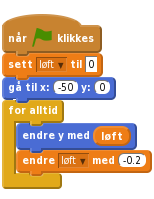
Deretter må vi endre Flakses flakseskript:
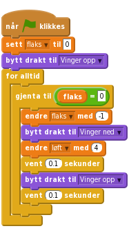
Klikk det grønne flagget.
Når spilleren taper vil vi at Flakse faller ned og ut av skjermen.
send meldingen Tap-klossen med send meldingen Fall i skriptet som merker når Flakse kræsjer i kanten eller i et rør. Slett stopp-klossen på slutten av skriptet.Legg til disse nye skriptene på Flakse-figuren:
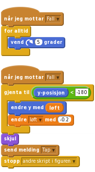
Du må også legge til en vis-kloss samt sette Flakses retning når spillet starter på nytt.
Klikk det grønne flagget.
Nett variabel (lagret på nett) boksen. Kall variabelen Rekord.Når spillet er ferdig må vi sjekke om det er en ny rekord. Det gjør vi ved å endre Tap-skriptet på Rør slik:
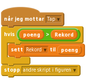
Nettvariabler gir deg muligheten til å huske ting mellom forskjellige brukere og forskjellige kjøringer av spillet ditt (i motsetning til vanlige variabler hvor verdiene blir nullstilt hver gang du trykker det grønne flagget). Dette er nøyaktig det vi trenger for å huske hva rekorden i spillet er.
Nettvariabler er fortsatt litt eksperimentelle, og for tiden får ikke nye brukere av Scratch lov til å lage slike variabler. Hvis du ikke får lov til å lage en slik variabel må du hoppe over den siste utfordringen.
Klikk det grønne flagget.
Gratulerer, du er ferdig med spillet! Hva er rekorden din?
Ikke glem å dele spillet med vennene dine. Trykk på Legg ut for at andre skal få prøve!